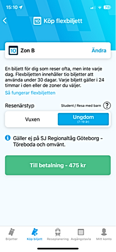

Introduction
Västtrafik is a prominent public transport company serving the western part of Sweden, catering to nearly half a million daily travelers. In this project. Our primary objective was to identify usability issues in three key areas and design improved user interfaces based on the findings.
Understanding the User
Our initial surveys indicated that the primary respondents for our Västtrafik survey were students. This was partly due to selection bias, as we are students and have a network of students in our circles. Our findings revealed that students heavily relied on trams and buses for transportation. In contrast, older individuals favored cars and alternative transportation methods. The average test person was approximately 25 years old, with a 60/40% gender split, typically a student with limited finances and no car. They tended to dislike long wait times, unclear information, stressful situations, and primarily used the app for their journeys.
Breaking down the process
We conducted usability tests to gain a better understanding of how users interacted with Västtrafik's website and app. Each participant was given eight scenarios, with four for Västtrafik's website and four for the To Go app. The website tests were conducted digitally with recordings, while the To Go app tests took place on-site. Participants were asked to "think out loud," providing insights into their thought process during the tests to analyze their decision-making and identify user-friendly features, stopping blocks, and potential improvements.
Problems to be solved
Student Pricing - Users faced confusion concerning student pricing, particularly when searching for student pricing on day tickets.
Bike Availability - Determining bike availability on Västtrafik transport was another source of confusion. Users had difficulty finding information about whether they could bring their bikes on trams, ferries, buses, and more.
Process
Ideate
To address these issues, we began ideating different solutions and brainstorming. We created simple, low-fidelity wireframes and moved on to mid-fidelity wireframes that we could quickly get feedback on from users
The solutions we settled on included changing the 'Youth' pricing option to 'Youth/Student' since they already had the same price. This change improved brevity and clarity without cluttering the design. To address bike accessibility, we added a specific filter for bikes and a bike icon to be displayed on all tram options.
Prototyping & Finalizing
We proceed to test our prototypes on test persons and found that the liked the redesign, but that the bike icons hard to see. We decided this was a problem of the black and white nature of the Mid-Fidelity wireframes and decided to proceed under the caveat of future testing on this with colours.
When we starting doing High-Fidelity and tested this again we found this to be true, but we decided to thicken the icon a bit extra in order to be safe. After some changes to colours and design we connected everything in Figma into a complete product and presented it once again to the class.
Solutions
Student Pricing
We made several changes throughout the app, including adding 'Student' alongside 'Youth' to save space. Information boxes were incorporated in the settings and other relevant sections to clearly indicate pricing.

.png)
Bike availability
We made several changes to address bike availability. This included adding a filtering function to the app and incorporating icons in search results to indicate trams that allowed bikes.
Key Takeaways
Users Give Up Quickly - Surprisingly, many participants did not complete tasks within our defined timeframes. Some even abandoned tasks if they couldn't find a solution within a minute.
Less Is More - Clearer communication was needed, as several participants had to reread questions/tasks, indicating a need for improved communication from our end. Some participants weren't sure if they had found the answer to the question.
To Click or Not to Click - Users approached scenarios differently, often taking various paths we couldn't predict. Some users struggled with the absence of a search option in the app.